Tourist Destination
Home Places Food
|
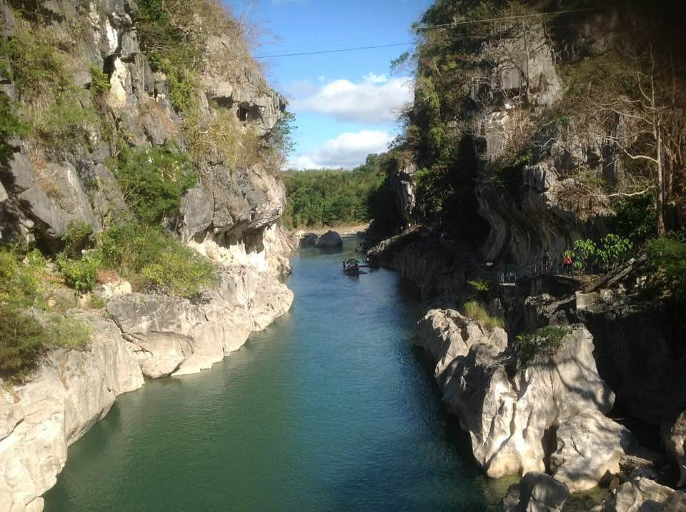 Location:Nueva Ecija, Central Luzon Description:Known for its Rice Granary of the Philippines |
Location:Tarlac, Central Luzon Description:A landlocked province known for its historical landmarks, agricultural lands, and cultural diversity. |
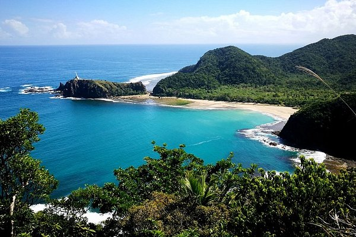 Location:Aurora, Eastern Central Luzon Description:A province recognized as the Culinary Capital of the Philippines due to its rich food culture. |
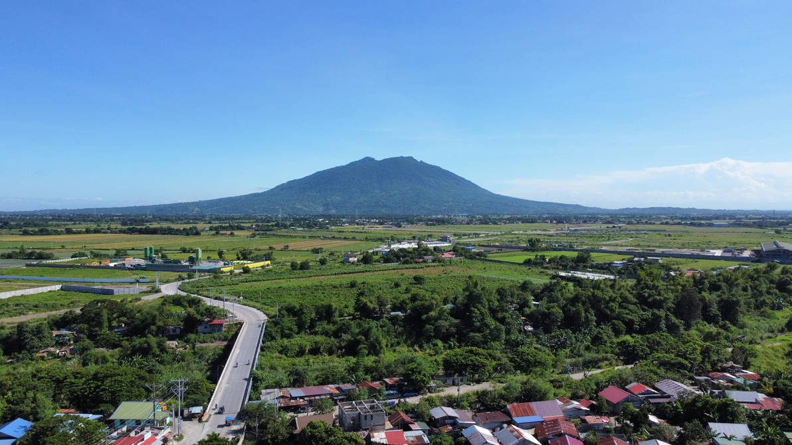 Location:Pampanga, Central Luzon Description:A province recognized as the Culinary Capital of the Philippines due to its rich food culture. |
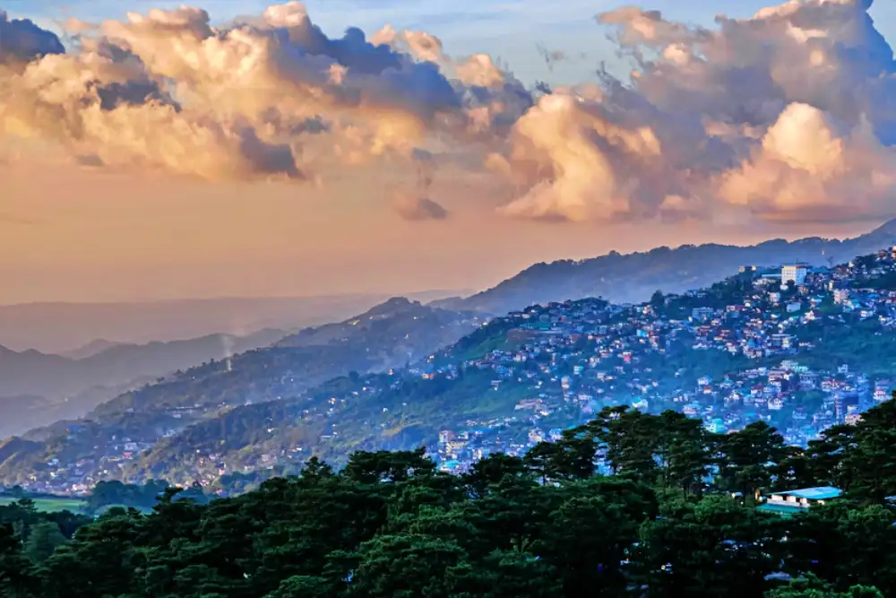 Location:Benguet, Northern Central Luzon Description:A mountainous province known for vegetable farming, strawberries, and cool climate. |
|
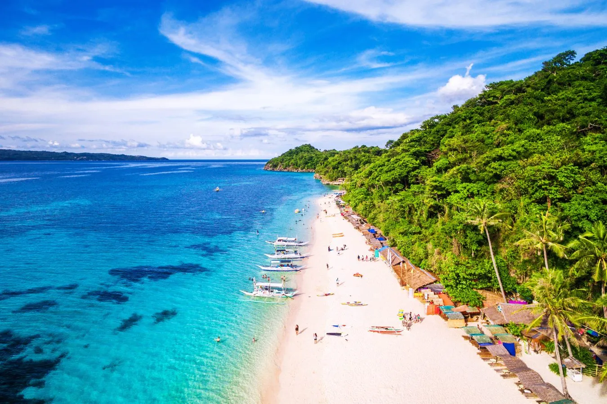 Location:Boracay, Aklan Description:A world-famous island known for its powdery white sand beaches and crystal-clear waters. |
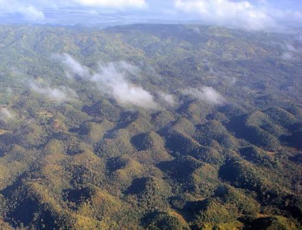 Location:Chocolate Hills, Bohol Description:A famous geological formation of more than 1,200 cone-shaped hills that turn brown during the dry season. |
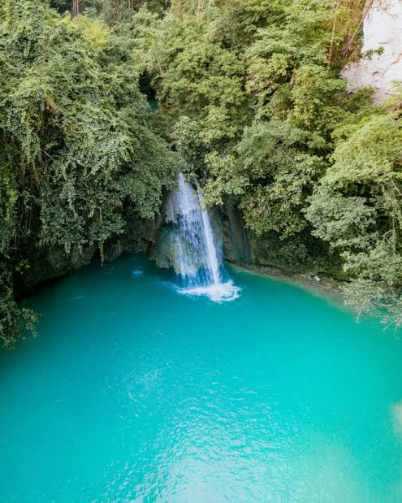 Location:Kawasan Falls, Badian Description:A multi-tiered waterfall famous for its turquoise waters and canyoneering activities. |
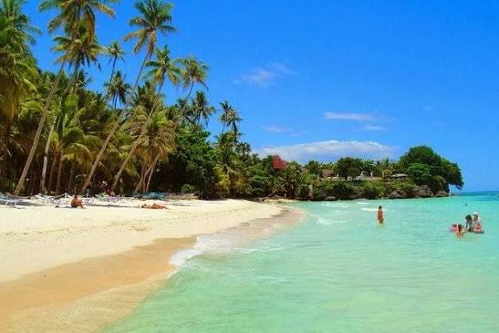 Location:Panglao Island, Bohol Description:A tropical island known for white sand beaches, diving sites, and luxury resorts. |
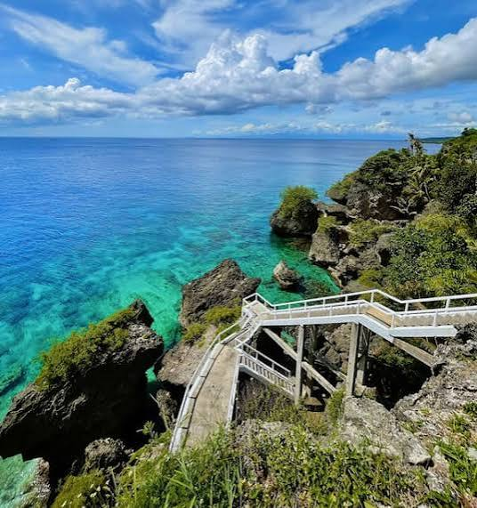 Location:Siquijor Island, Central Visayas Description:An island province known for its beaches, waterfalls, caves, and local folklore about healing traditions. |
|
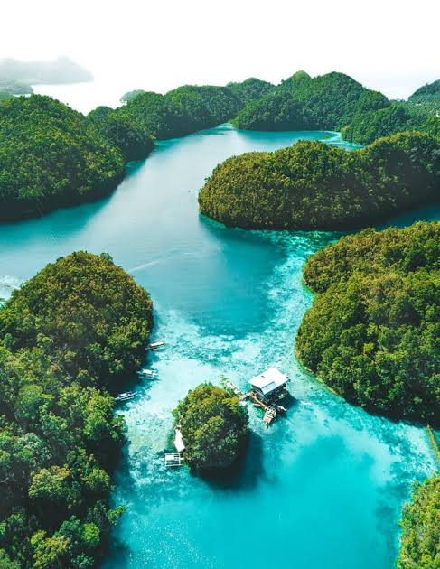 Location:Siargao Island, Caraga Region Description:Known as the "Surfing Capital of the Philippines," famous for Cloud 9 and island-hopping destinations. |
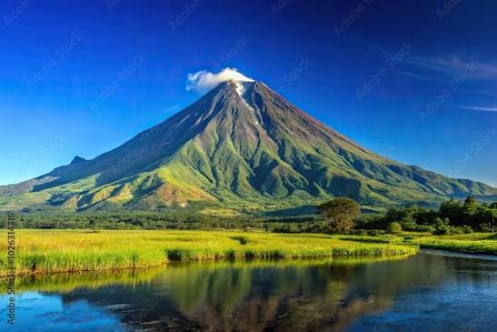 Location:Mount Apo, Mindanao Description:The highest mountain in the Philippines, standing at 2,954 meters above sea level. |
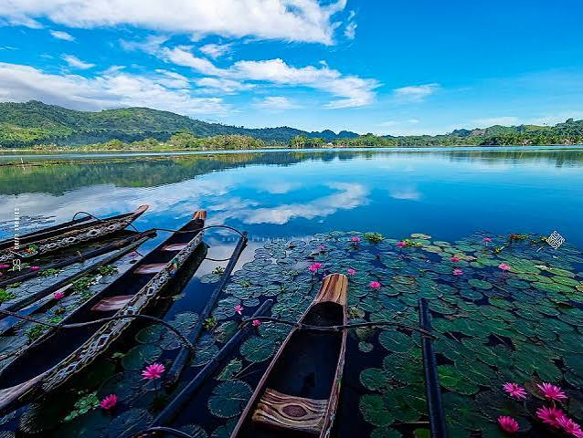 Location:Lake Sebu, South Cotabato Description:A scenic lake surrounded by mountains, known for tilapia farming and the culture of the T'boli people. |
Location:Pink Beach, Zamboanga City Description:A unique beach with naturally pink sand created by crushed red organ pipe coral mixed with white sand. |
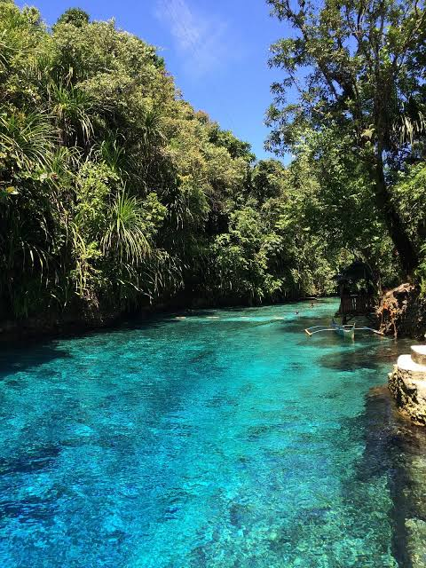 Location:Hinatuan Enchanted River, Surigao del Sur Description:A deep, crystal-clear blue river famous for its mysterious appearance and vibrant aquatic life. |